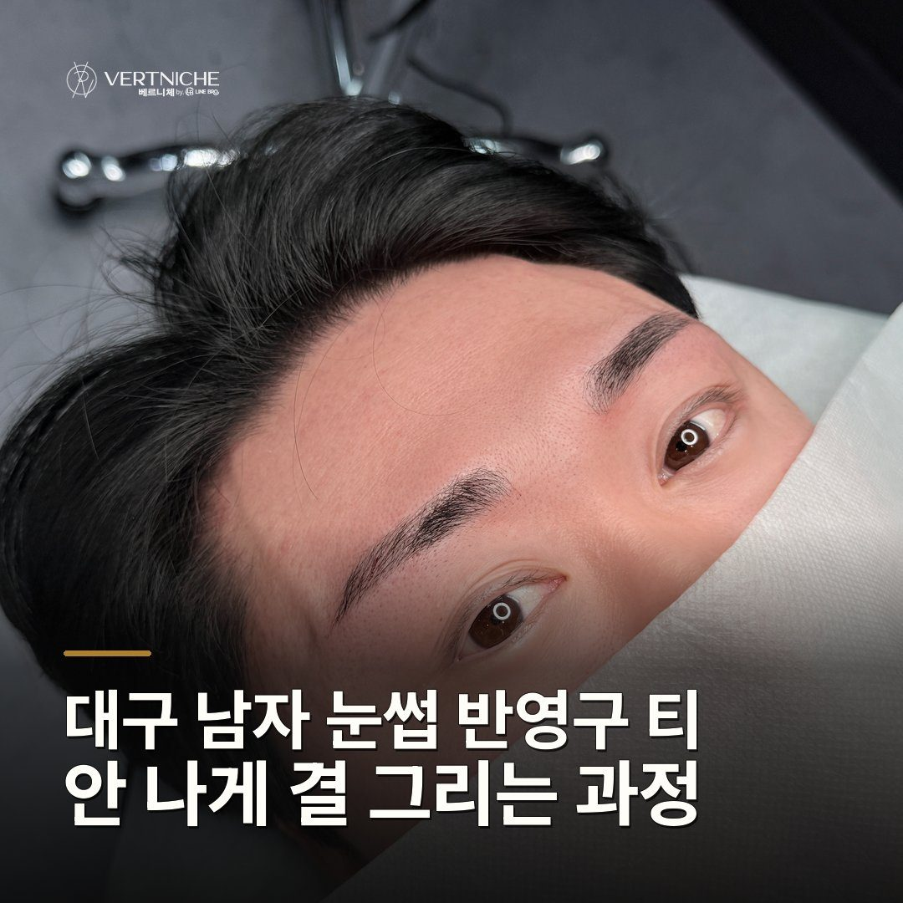

대구 남자 눈썹 반영구 티 안 나게 결 그리는 과정

- 대구 남자눈썹 반영구는 티를 없애는 게 아니라 결을 심어 자연스럽게 하는 과정이에요
- 면을 채우기보다 한 올씩 결을 심어야 민낯에도 과하지 않아요
- 결의 완성은 시술대가 아니라 회복 2주 관리에서 결정돼요
반영구 눈썹이 왜 결로 심어지는지, 티 안 나게 자리 잡는 순서와 상담 때 확인할 기준을 실제 시술 흐름대로 정리했어요.
면을 채우는 게 아니라 한 올씩 결을 심는 방식이에요
티가 안 나는 자연스러움은 색을 연하게 넣어서 나오는 게 아니라, 심는 방식 자체에서 갈려요. 눈썹 전체를 색으로 메우는 콤보 방식이 있고, 원래 털 사이사이에 얇은 선을 한 올씩 그어 넣는 자연결 방식이 있는데, 남자분들한테는 자연결을 권하는 편이에요.
가지고 있는 눈썹에서 너무 벗어나면 단차가 생겨요
자연스러움은 디자인 단계에서 거의 결정돼요. 원래 눈썹 흐름에서 너무 벗어나게 그리면, 잉크가 들어간 자리와 기존 눈썹이 있는 자리 사이에 단차가 생기거든요.
몸에 하는 문신과 달리 반영구로 하는 이유가 있어요
반영구를 쓰는 건 일부러예요. 원리는 문신과 비슷한데, 시간이 지났을 때가 달라요.
시술보다 회복 관리에서 결이 완성돼요
한 올씩 잘 심어도, 아무는 2주 동안 관리를 어떻게 하느냐에 따라 결이 살기도 하고 빠지기도 해요. 상처가 촉촉하게 유지되면 딱지가 덜 생기는데, 딱지가 생긴 채로 그게 떨어져 나가면서 아직 덜 착색된 잉크가 같이 빠질 수 있거든요.
상담 때 확인할 것
- 결 방향: 기존 눈썹 흐름을 따라가는지
- 시작점 높이: 양쪽 대칭이 맞는지
- 디자인 범위: 지금 골격에서 무리 없는 선인지
- 유지 기간: 변색 없이 흐려지는 설계인지
- 사후관리: 딱지·세안 안내를 받았는지
자주 묻는 질문
결로 심으면 정말 가까이서 봐도 티가 안 나나요?
가까이서 봐도 어디까지가 내 털인지 잘 구분이 안 될 만큼 섞여요. 다만 아예 안 보이는 건 아니고, 처음보다 눈썹이 또렷해진 정도의 '좋아진 티'가 나요. 그게 시술받은 의미이기도 하고요.
짝짝이인데 결로만 맞출 수 있나요?
시작점 높이나 뒷라인 밀도 차이는 결을 심어서 균형을 잡을 수 있어요. 다만 지금 눈썹에서 너무 벗어나게 끌어오면 단차가 생기니까, 자연스럽게 맞춰지는 선 안에서 잡는 게 결과가 좋아요.
몇 년씩 안 지워지는 거 아닌가요?
그렇게 깊게 넣지 않아요. 1년에서 1년 반 정도 유지되다가 앞뒤부터 서서히 흐려져요. 변색 없이 흐려지게 설계하는 게 얼굴 반영구의 기준이에요.
요약입니다. 사례와 사진이 있는 전체 글은 네이버 블로그에서 볼 수 있습니다.